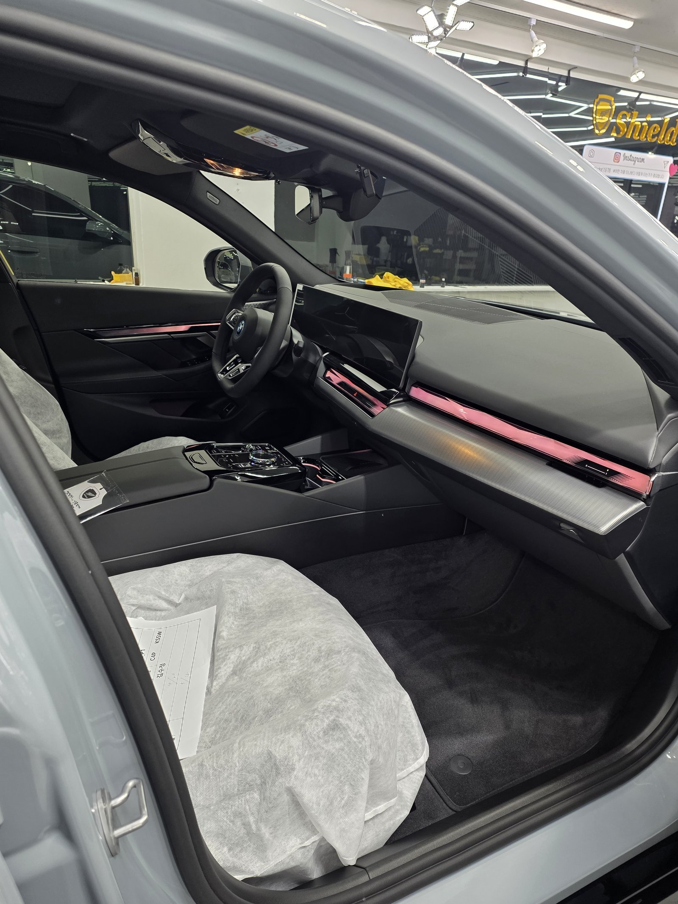
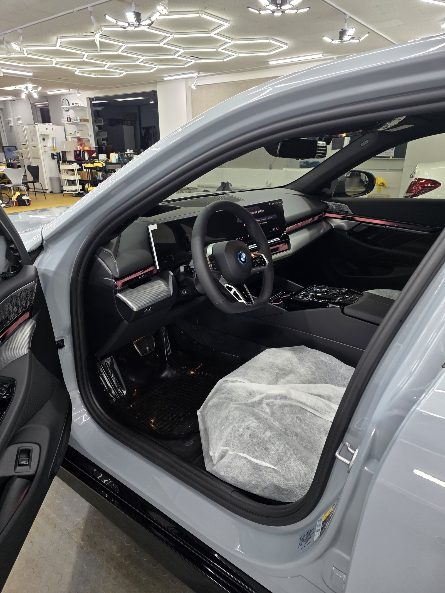
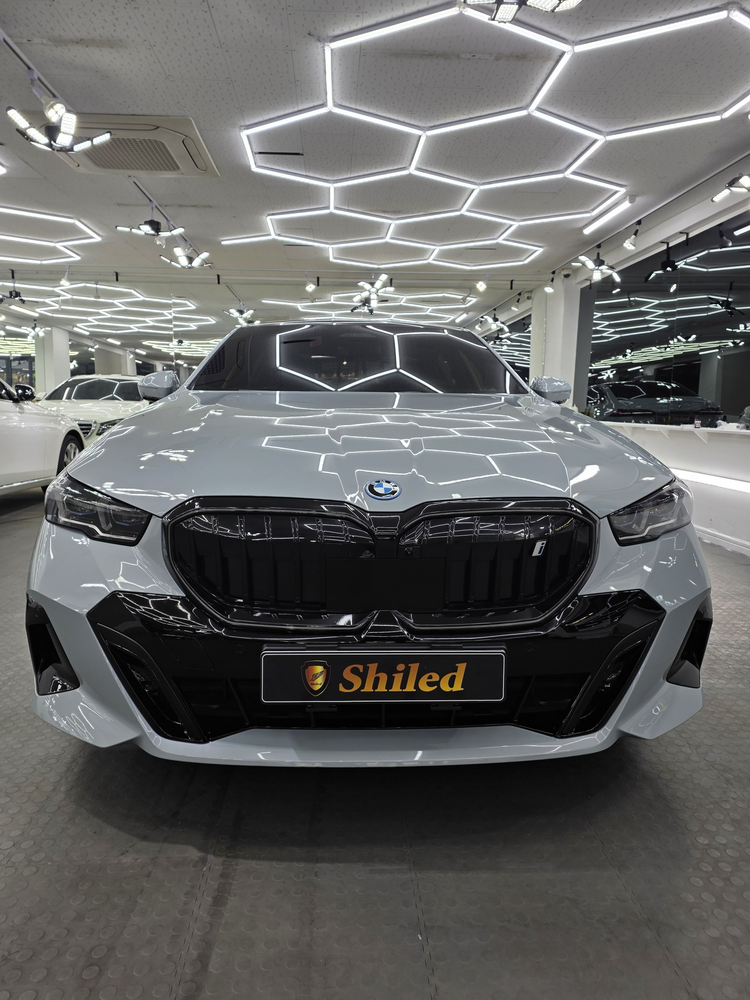
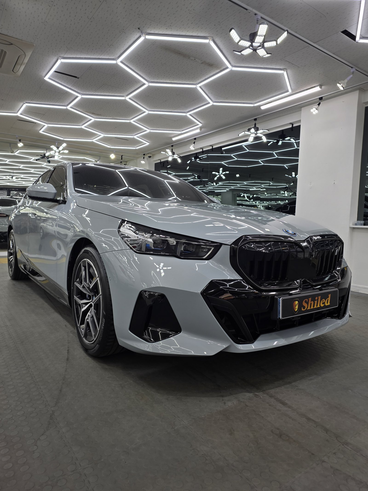
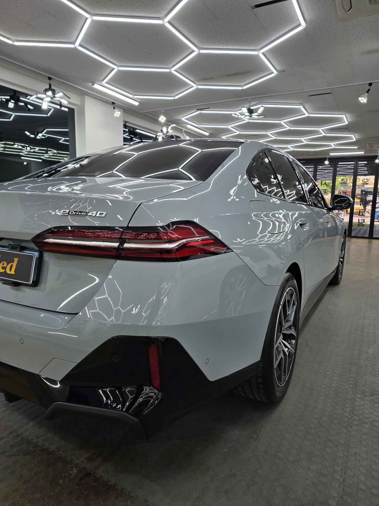
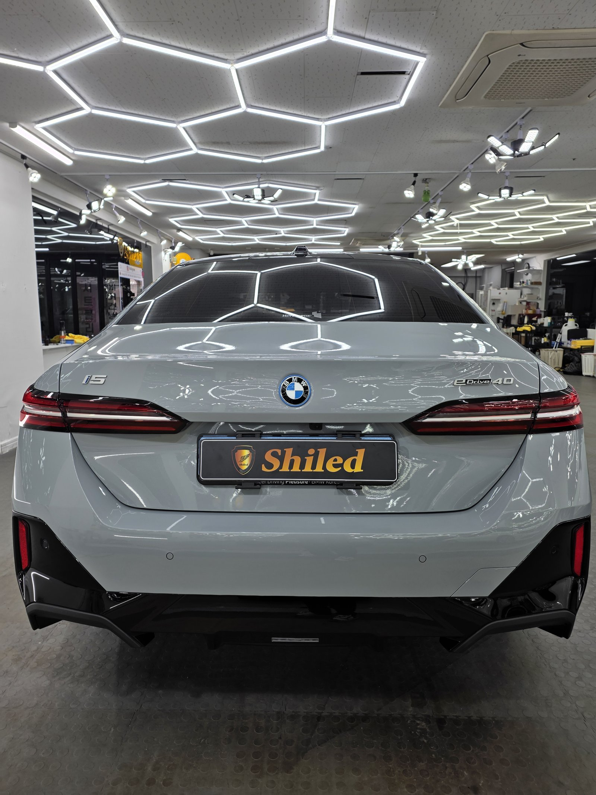
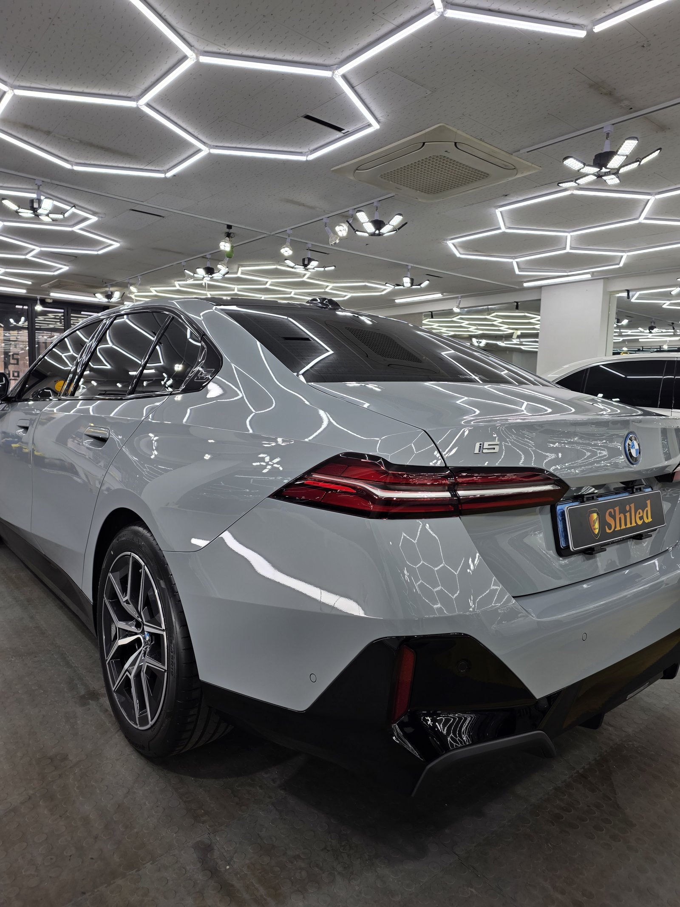
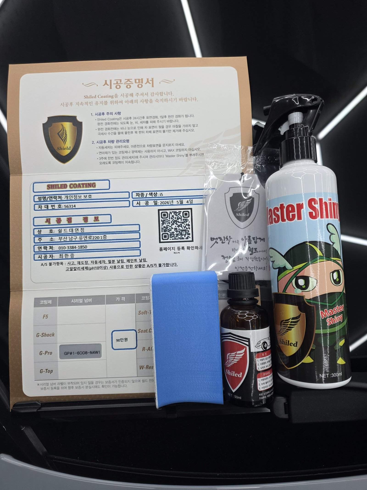

BMW i5 화이트입니다. 아직 출고 전, 새 차입니다.
이 차는 출고 전에 G-PRO 유리막코팅으로 진행했습니다.

전기차 신차, 왜 출고 전에 코팅하나
전기차라고 도장 관리 원리가 다르지 않습니다. 도장면이 가장 깨끗할 때 올리는 코팅이 가장 오래갑니다.
오히려 전기차는 주행 소음이 적어 잔기스나 워터스팟이 눈에 더 잘 띈다는 차주분들이 많습니다. 그래서 출고 전, 신차 컨디션 그대로일 때 코팅막을 입혀둡니다.

화이트 신차에 왜 G-PRO인가
화이트는 검정만큼 발색을 따질 일이 적습니다. 대신 잔기스와 오염 관리가 핵심입니다.
저희 제품 중 경도가 가장 높은 G-PRO 하드코팅이 여기서 값을 합니다. 스크래치 내성이 강해, 세차와 운행이 잦아도 화이트 특유의 깨끗한 톤을 오래 지켜줍니다.

기술자의 팁
신차라도 운송·보관 과정에서 미세 오염이 묻습니다. 디테일링 세차와 탈지로 표면을 정리한 뒤에 G-PRO를 올려야 코팅이 제대로 밀착합니다.


마감 후
헥사 조명이 도어와 펜더 라인을 따라 왜곡 없이 이어집니다. 코팅막이 고르게 올라갔다는 증거입니다.


시공증명서를 함께 드립니다
모든 시공 차량에 시공증명서를 드립니다.
차종·시공일·코팅제 시리얼 번호가 적혀 있고, 홈페이지에 등록해 보증을 받으실 수 있습니다. 이 차는 G-PRO 코팅으로 기록돼 있습니다.

차종·시공일·코팅제 시리얼이 기재된 시공증명서
자주 묻는 질문
Q. 전기차도 유리막코팅이 필요한가요?
A. 필요합니다. 도장 관리 원리는 내연기관차와 같습니다. 오히려 정숙성 때문에 잔기스나 오염이 더 잘 눈에 띄어 코팅 관리가 유리합니다.
Q. i5에는 왜 G-PRO를 선택했나요?
A. 화이트는 발색보다 잔기스·오염 관리가 관건입니다. 경도가 가장 높은 G-PRO 하드코팅이 여기서 값을 합니다.
Q. 신차인데 출고 전에 코팅하는 이유가 뭔가요?
A. 도장면이 가장 깨끗할 때 올리는 코팅이 가장 오래갑니다. 운행·세차로 잔기스가 쌓이기 전, 신차 상태일 때 코팅막을 입혀둡니다.
Q. 쉴드광택 위치와 예약은 어떻게 하나요?
A. 부산 남구 유엔로220 1F 쉴드광택입니다. 예약·상담은 010-3384-1850, 대표 최한중이 직접 상담하고 책임 시공합니다.
전기차든 내연기관차든, 새 차일수록 시작점이 다릅니다.
제품을 직접 만드는 사람이 직접 시공합니다.
부산에서 신차코팅을 고민 중이시면 편하게 연락 주십시오.
어떤 차를 타냐보다 어떻게 타냐가 중요합니다~!
시공 중에는 전화를 받지 못할 때가 많습니다.
카카오톡으로 차종과 원하시는 시공을 남겨주시면 확인 후 답변드립니다.
쉴드광택 · 부산 남구 유엔로220 1F · 대표 최한중